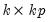
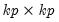
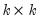

|
|
|
Data members are available to provide you access to the results of the VAR. We focus here on a few of the more commonly used members, but many others are available (see “Var Data Members” a complete list of data members that are available for a VAR object).Coefficients of (the unrestricted) VARs may be accessed by referring to the elements of a two dimensional array “C”. The first dimension of C refers to the equation number of the VAR, while the second dimension refers to the variable number in each equation.To access the entire matrix of coefficient results (in the order they are displayed in the estimation output), you may use the @coefmat member:To view the correspondence between the elements of C and the variables and estimated coefficients, select View/Representations from the VAR toolbar.Thematrix of lag coefficients for a given lag may be obtained using the @lagcoef(k) data member. Rows and columns of the matrix will correspond to the endogenous variables in the VAR, in the order in which they are specified. For example
Similarly, the @lagcoefs member will provide you with the  matrix containing the full set of horizontally concatenated lag coefficient matrices,If you require the  companion form of the lag coefficient matrix, you may use the @companion data member:To obtain the  sum of the lag coefficient matrices, use the @lagcoefsum data member: